要进行这项工作，你的计算机上需要已经安装好：
1.node.js 10.0或者更高（地址：
nodejs.org）
2.git工具（地址：
git-scm.com/downloads；国内建议淘宝镜像
npm.taobao.org/mirrors/git-for-windows/）
注意：git安装时需要允许命令行访问
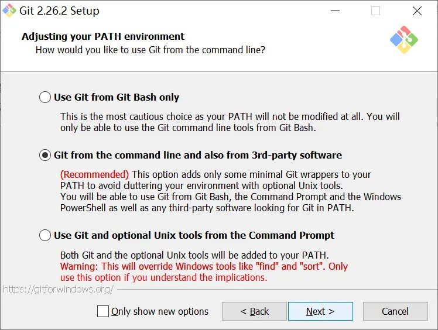
注意：git安装时需要允许命令行访问
除此之外，你还要准备一个GitHub账户。
好，又水了很多，现在开始：
1. 登录你的GitHub账户（没有就去注册！），新建一个仓库，仓库名随便写,什么都不用管，直接创建。
**注意，如果填写"你的用户名.github.io"那么以后你的博客地址则为"你的用户名.github.io"，否则访问地址则为"你的用户名.github.io/仓库名"
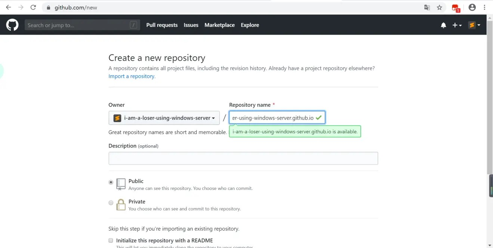
例如如图创建的代码仓库，访问地址为"i-am-a-loser-using-windows-server.github.io"
**注意，创建完仓库不要直接上传文件，窗口最好也别关。
2.下载Hexo框架（下载地址：
https://github.com/hexojs/hexo，直接下载Zip即可）
3.安装，部署并启动Hexo
3.1 解压下载的Zip
3.2 进入hexo-master，就是有一堆文件那个，在目录下按住Shift右击，选择"在此处打开Powershell窗口(S)"
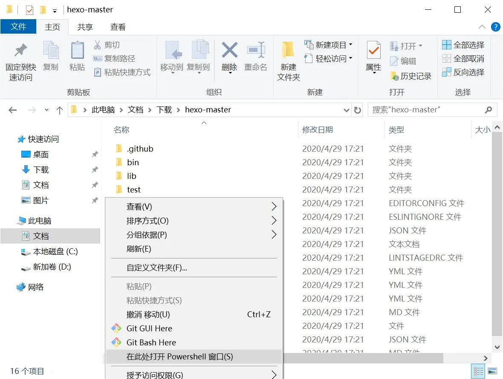
选择"在此处打开Powershell窗口(S)"
3.3 依次键入：
npm install hexo-cli -g
set-ExecutionPolicy RemoteSigned
hexo init 随便写一个名字
cd 刚刚写的名字
hexo server(或者简写hexo s)
到这里，你就成功地启动了本地的Hexo服务器，一般访问
localhost:4000或者
127.0.0.1:4000能够访问到Hexo的本地页面
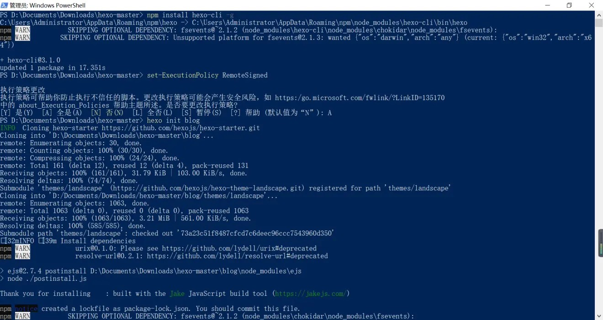
正常的页面输出
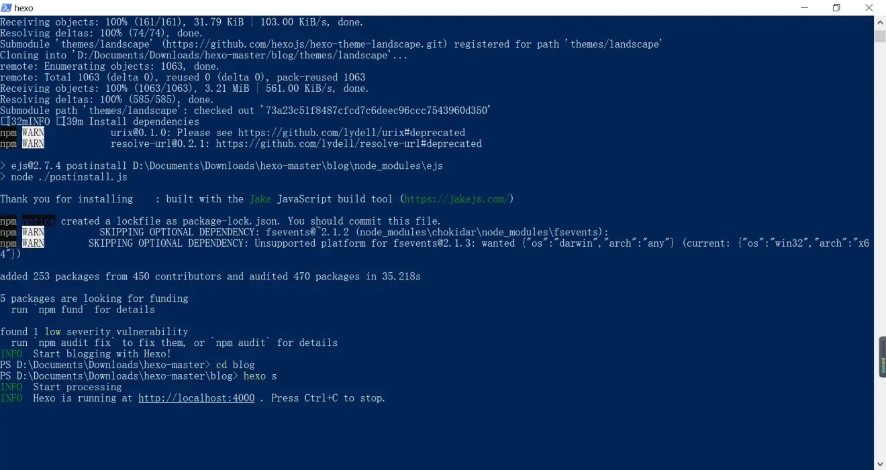
此时按下Control+C可以停止本地服务器
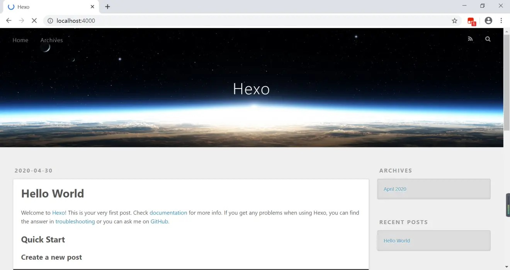
默认Hexo页面
4.推送到远端GitHub仓库
先按下Control+C停止本地服务器，你也可以新建一个Powershell窗口
首先键入：hexo generate来生成静态页面
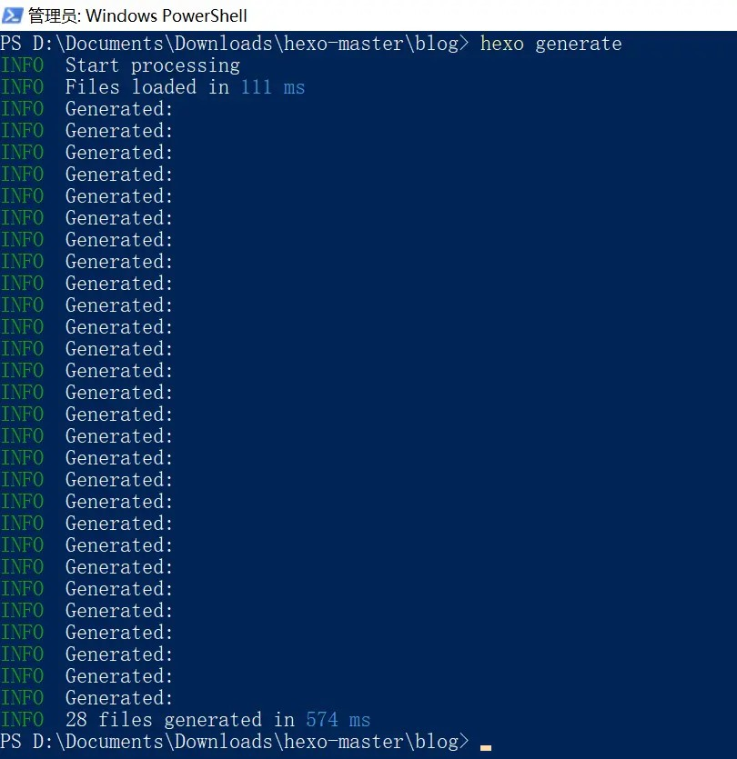
生成静态页面
键入cd public
然后依次键入：
git init
git add .
git commit -m "随便写，这是提交描述"
还记得之前那个GitHub页面吗，现在打开它，将图中的高亮两行文字拷贝，然后键入到Powershell
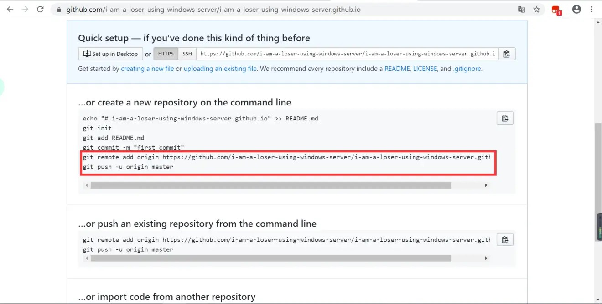
将图中的高亮两行文字拷贝，然后键入到Powershell
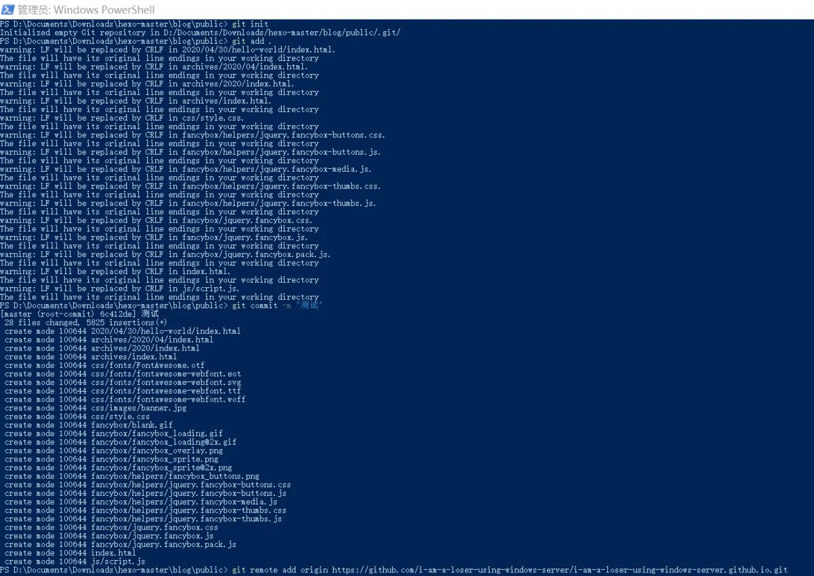
这里是正常的Powershell提示
这里是正常的Powershell提示
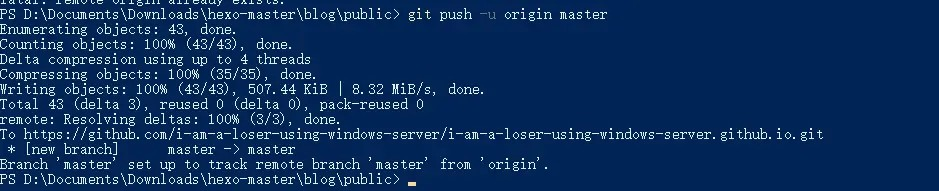
这里是正常的Powershell提示
**如果出现如下图所示警告则键入：
git config --global user.email "注册邮箱"
或者：
git config --global user.name "你的账户名"
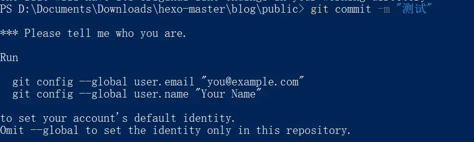
如果出现如图所示警告则键入"git config --global user.email "注册邮箱""
此时刷新GitHub页面，就能看到多了一些文件，此时访问"你的用户名.github.io"对于仓库名没有起为"你的用户名.github.io"的则访问"你的用户名.github.io/仓库名"应当就能看到与本地服务器显示一致的网页。
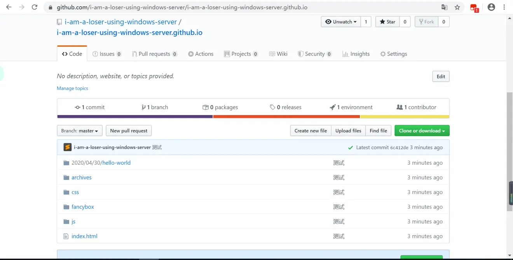
此时刷新GitHub页面，就能看到多了一些文件
此时访问GitHub Pages应当就能看到与本地服务器显示一致的网页
如果无法正常访问可以尝试查看Settings里的GitHub Pages
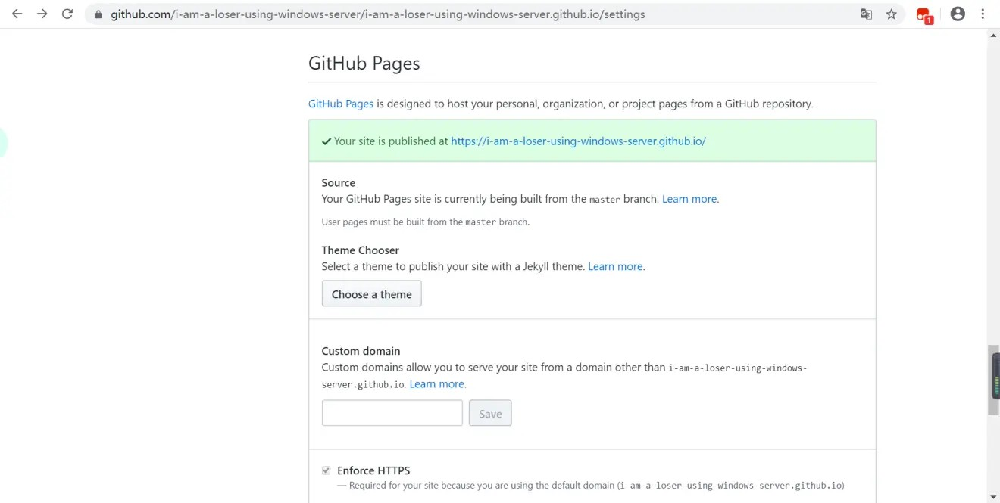
如果无法正常访问可以尝试查看Settings里的GitHub Pages（这张图是正常的）
写在最后：
想要创建新的文章，请使用：hexo new "你的标题"，然后到\source\_posts\文件名.md里修改，格式为MarkDown。
如果觉得丑，想换主题，可以去：https://hexo.io/themes/里查找主题更换。
还可以加一些插件，可以去： https://hexo.io/plugins/看看
**换主题和加插件请仔细阅读官方的文档，Hexo的和主题的文档都得看。
以后推送到远端的仓库，都可以使用：
git add .
git commit -m "随便写，这是提交描述"
git push -u origin master
推送如果出现错误，可以看看强制推送："git push -f -u origin master"（慎用）
我不太确定码云(Gitee)
能不能用Hexo，不过我看它的说明好像可以的亚子。